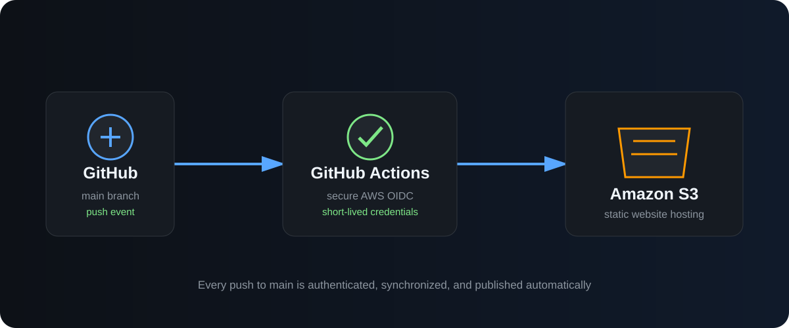

rafael@cloud:~/projects$ cat aws-cloud-portfolio.md
AWS Cloud Portfolio
A secure, globally delivered cloud portfolio with automated deployment, a custom HTTPS domain and a serverless visitor counter.

Project Status
Deployed
The production website is available at rafaellemos.cloud. Every push to the main GitHub branch deploys automatically to Amazon S3 using secure AWS OIDC authentication, followed by a CloudFront cache invalidation.
Technologies Used
Project Goals
Build a professional portfolio that demonstrates practical cloud, infrastructure and technical support skills.
Learn how websites are structured, styled and made interactive using HTML, CSS and JavaScript.
Deploy the website as a secure, globally accessible AWS solution with automated delivery, cost monitoring and a persistent serverless visitor counter.
What I Have Completed
✓ Created the website structure with HTML
✓ Built a responsive layout using CSS
✓ Added a terminal-inspired design
✓ Added JavaScript typing animation
✓ Created responsive project cards
✓ Created an AWS account and IAM administrator
✓ Created an Amazon S3 portfolio bucket
✓ Automated deployments with GitHub Actions
✓ Secured GitHub authentication with AWS OIDC
✓ Delivered the site globally with CloudFront and HTTPS
✓ Registered and configured rafaellemos.cloud with Route 53
✓ Restricted the S3 origin to CloudFront access
✓ Built a visitor counter with Lambda and DynamoDB
✓ Added AWS cost monitoring and a zero-spend budget
Next Steps
→ Add CloudWatch monitoring for Lambda errors
→ Add automated infrastructure deployment with Terraform
→ Improve visitor analytics while preserving privacy
→ Continue documenting AWS architecture and lessons learned